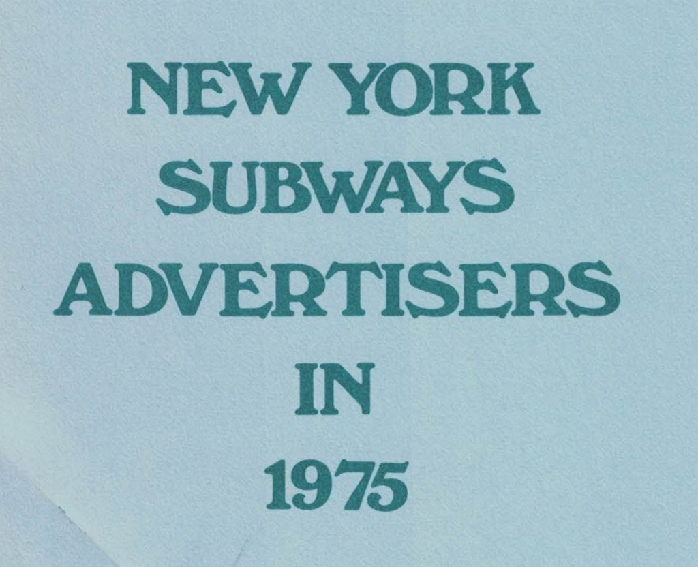
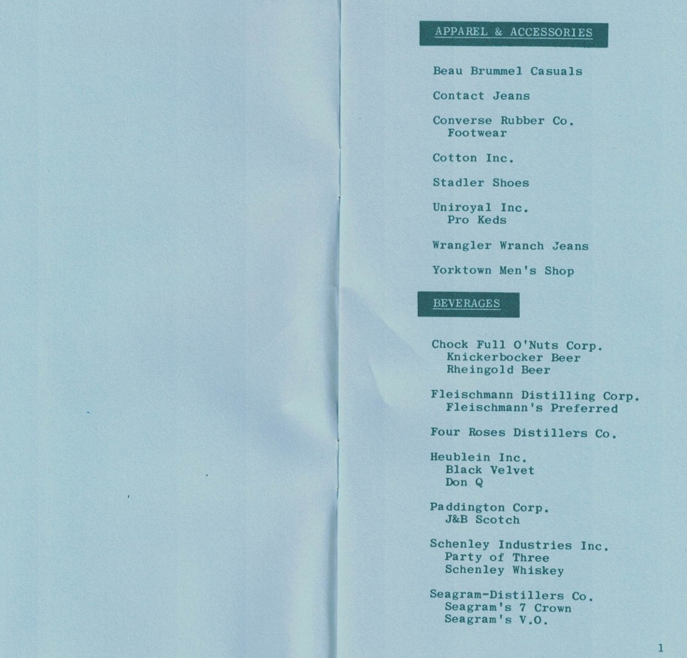
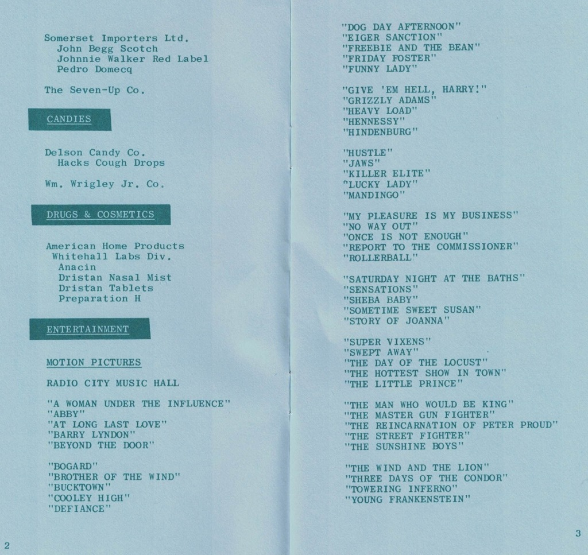
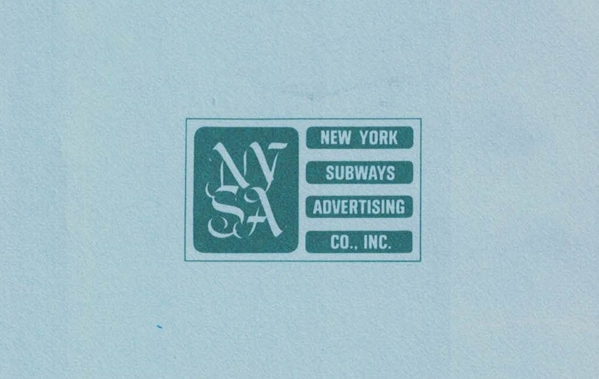
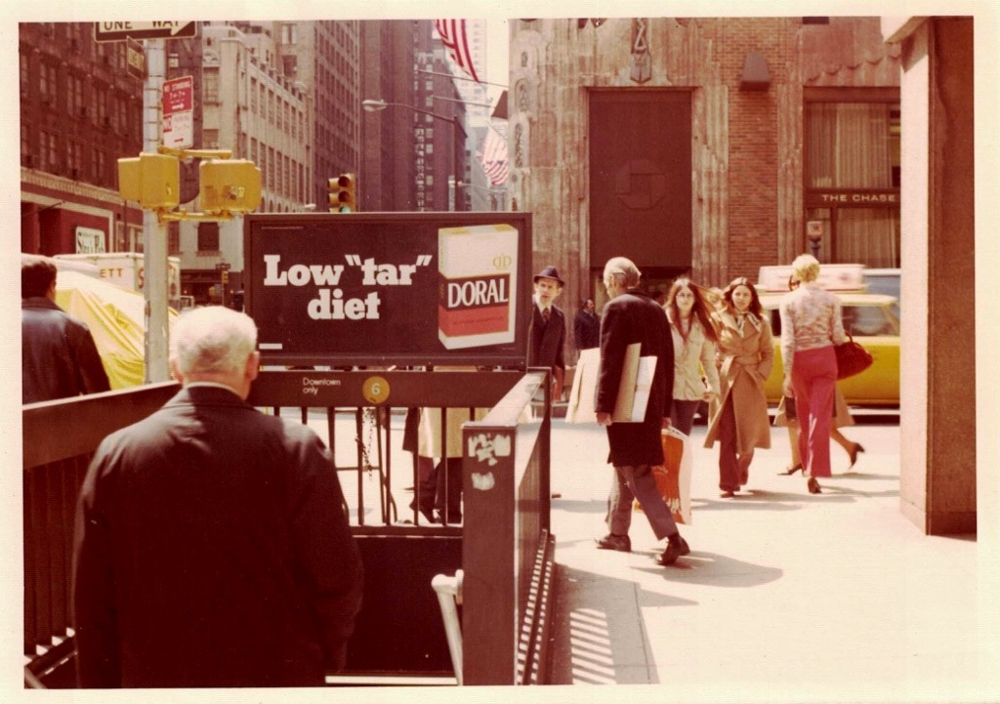

70s fashion outside the New Yorker, Broadway and 89th, 1977.









Two years after People magazine debuted on newsstands, Time Inc.’s Magazine Development Group was looking into subway advertising as a way to promote the title. Materials from the New York Subways Advertising Co., Inc. made the case that a poster for People might look nice alongside advertisements for products like Pro-Keds and Rheingold Beer.
Records in this file don’t indicate what sort of advertising the magazine ultimately bought, but these documents nevertheless offer a snapshot of who was trying to reach New Yorkers in the mid-1970s.
New-York Historical Society will remain closed through the end of the month to help support the city’s efforts to contain the spread of COVID-19 and to protect the health of our visitors and staff. Check www.nyhistory.org/visit/plan for updates, and in the meantime, learn more about what’s in the Time Inc Records by browsing the finding aids online.
New York Subways Advertising Co., Inc. promotional material. 1976. Time Inc Records: MS 3009.RG 40: Magazine Development Group Records: 1973-1978 Business Records: General Managers Winston Cox and Deane Raley Files: Administrative Files: New York Subways Ads, 1976. New-York Historical Society.